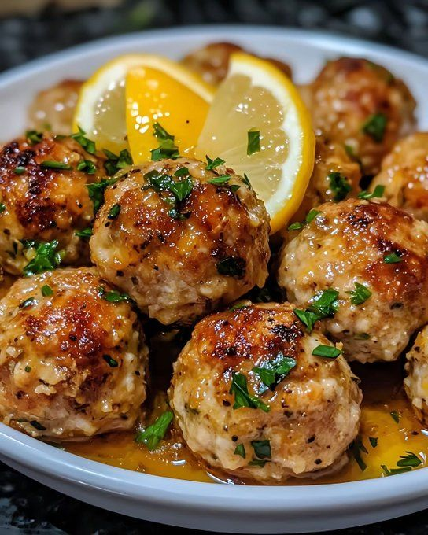

Chicken Piccata Meatballs

- Meal
- Dinner
- Serves
- 6
- Protein
- chicken
- Cook
- stovetop · 30 min active / 40 min total · easy
- Make-ahead / leftovers
- no / yes
- Mediterranean
- yes
- WW tier
- moderate
- Status
- Trying out (probation)
Flavorful Kitchen Adventures' chicken piccata meatballs: ground-chicken meatballs browned then simmered in a lemon-caper piccata sauce. Not Turkey Meatballs in Tomato Sauce (tomato, baked) and not Lemon Chicken Orzo (cutlets/orzo). No fish or shellfish — no fish-free swap needed.
Amounts below are scaled ×1.5 to serve 6; the source amount (serves 4) is in brackets. Meatball count ~21–24 [14–16].
Ingredients
Meatballs
- 1.5 lb ground chicken [1 lb]
- 3/4 cup panko [1/2 cup]
- 2 eggs [1]
- 6 Tbsp (1/4 cup + 2 Tbsp) grated Parmesan [1/4 cup]
- 3 garlic cloves, minced [2]
- 3 Tbsp chopped parsley [2 Tbsp]
- 1 1/2 tsp lemon zest [1 tsp]
- 1 1/2 Tbsp lemon juice [1 Tbsp]
- 3/4 tsp kosher salt [1/2 tsp]
- 3/8 tsp black pepper [1/4 tsp]
- 3 Tbsp olive oil for cooking [2 Tbsp]
Piccata sauce
- 3 Tbsp butter [2 Tbsp]
- 3 garlic cloves, minced [2]
- 1 7/8 cups (about 1 3/4 cups + 2 Tbsp) chicken broth [1 1/4 cups]
- 6 Tbsp (1/4 cup + 2 Tbsp) fresh lemon juice [1/4 cup]
- 3 Tbsp capers, drained [2 Tbsp]
- 1 1/2 tsp Dijon [1 tsp]
- 1 1/2 Tbsp flour mixed with 3 Tbsp water (or 1 1/2 tsp cornstarch mixed with 1 1/2 Tbsp water) [1 Tbsp flour + 2 Tbsp water, or 1 tsp cornstarch + 1 Tbsp water]
- 3 Tbsp chopped parsley [2 Tbsp]
- 1 1/2–3 Tbsp heavy cream (optional) [1–2 Tbsp]
- Salt and pepper
To serve
- Lemon wedges
- Extra parsley
- Mashed potatoes, pasta, brown rice, or roasted vegetables
Method
- Mix all meatball ingredients except the oil just until combined; form about 21–24 balls [14–16] (lightly oiled hands help).
- Brown in the oil over medium heat 6–8 min, turning often; not cooked through yet; set aside. With a 12-inch skillet, brown the 1.5× batch in two rounds (see Notes).
- Same skillet: melt butter, add garlic 20 s. Add broth, lemon juice, capers and Dijon; bring to a simmer.
- Stir in slurry, simmer 1–2 min until glossy. Add cream if using.
- Return meatballs and juices, spoon sauce over, cover loosely, simmer 6–8 min until cooked through.
- Top with parsley, serve with lemon wedges and the side of choice.
Notes
- Scaled ×1.5 from Flavorful Kitchen Adventures' serves-4 post (20 min prep / 20 min cook as written). Source amounts in brackets. Meatballs ~21–24 [14–16].
- House notes (do not change the recipe): if served with rice, use brown rice (house rule). Kids may pick off capers — serve capers on the side if needed. Ground chicken: Sam's or Aldi. With a 12-inch skillet, brown the 1.5× batch in two rounds so the meatballs sear instead of steam. No fish or shellfish in the recipe (no anchovy, fish sauce, or Worcestershire expected) — no fish-free swap.
- Source tips: don't overmix; extra zest at the end for more lemon; more capers if you like. Optional add-ins: baby spinach in the sauce, extra Parmesan in the meatballs, crushed red pepper.
- Mediterranean ✓: olive oil as the browning fat (#1), poultry (#2), and potatoes / brown rice / roasted vegetables as the plate (#4) — 3 of 4. Capers and parsley sit in the sauce but are thin for the vegetable test on their own; spinach as an optional add-in would lock #3 too. moderate (panko, Parmesan, butter sauce, optional cream — not light; not cream- or cheese-heavy enough for heavy). Not red meat.